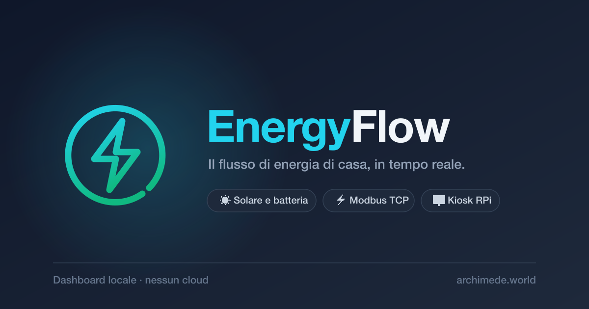
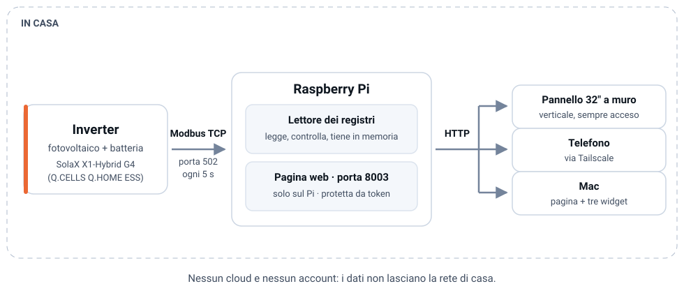

In azione
Lo stesso impianto, due schermi.



Letto direttamente dall'inverter, ogni cinque secondi. Nessun cloud, nessun account.
v2.0.0 · 9 agosto 2026
Il problema
Cosa fa
Per chi
Tutta la famiglia. Nessuna interazione prevista: si guarda e basta, come un orologio.
Dal divano o da fuori casa, telefono o Mac. Stessa pagina, niente password da digitare.
Una persona sola, che vuole log leggibili, uno stato di salute onesto e un controllo che fallisce quando c'è qualcosa che non va.
La sorgente. Non chiede niente e non sa di essere letto: risponde e basta.
Come funziona

In azione
Cosa è cambiato
E il conto del solare tornava sempre — anche con la mappa sbagliata.
Un calcolo che non può sbagliare non verifica niente. Adesso il solare viene dalla potenza misurata dei pannelli, con accanto dodici verifiche fisiche che possono fallire.
Stato — v2.0.0
48 campi verificati sulla mappa registri v2.1 · storico persistente al minuto, 90 giorni, con riepilogo di ogni giornata che non si cancella mai · vista 3D · tema che segue alba e tramonto · pannello verticale in kiosk · accesso protetto da token e raggiungibile solo dal tailnet · tre widget per macOS · dodici verifiche fisiche.
21 registri non ancora identificati, esclusi invece che indovinati · nel riepilogo giornaliero solo la produzione viene dal contatore dell'inverter, il resto è ricostruito · nessuna notifica o allarme: il pannello si guarda, non avvisa · nessun comando all'inverter: EnergyFlow legge, non pilota.
Niente di quanto sta nella colonna di destra è presentato altrove come se ci fosse già.
Come si prova
Sul pannello a muro: è già lì e si accende da solo.
Da telefono o da Mac, dentro o fuori casa, con Tailscale acceso:
https://<rpi-host>.<tailnet>.ts.net/In locale, dalla cartella del progetto:
python3 invert.py --serve
# → http://localhost:8003Credenziali e indirizzi reali: vedi password manager. Il resto è nella guida operativa.